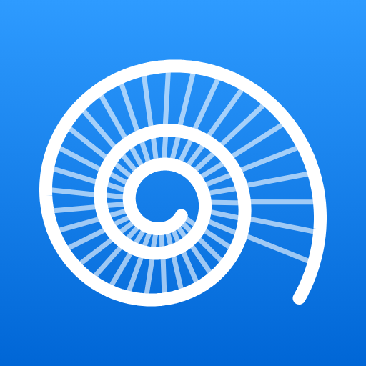

Based on November 2026
Museum Guides
Free audio guides for a first visit to two London museums. Pick a walk, put your headphones in, and a narrator tells you where to go, what to look for, and the story behind it.
Watch the Demo
Sound on: this is the guide's real narration, at the blue whale in Hintze Hall.
The voice is an AI narrator reading the guide's own words. Captions are on the video.
Listen to the Opening
The opening of the Natural History Museum guide's story of Hope, the blue whale, as you would hear it standing underneath her.
Read Along
Hope, the Blue Whale.
Stand just inside the door and look up. Higher. Not that high, that is the ceiling. There she is: a blue whale, the largest animal ever known to have lived, caught in the middle of a dive. Twenty-five metres long, two hundred and twenty-one bones, and a name. Hope. She is the largest of the museum's more than eighty million specimens. It was never close.
Look along her, tail to head, and go back to 1891. On the twenty-fifth of March she stranded on Swantons Bank, at the mouth of Wexford Harbour, in Ireland, and was stuck there for two days. A lifeboat pilot in his twenties, Ned Wickham, led the men who rowed out to her, and the next day he ended her suffering with an improvised harpoon.

Natural History Museum
Hope the blue whale, the dinosaurs, a stone from Mars and a 1,300-year-old tree. 14 stops, about 1 hour 50 minutes of stories.
Open the guideOn a Computer?
Scan this with your phone's camera to open the Natural History Museum guide there, where it belongs: in your pocket, with headphones in.
Science Museum
Steam engines, a capsule that came back from space, Alcock and Brown's aeroplane, and the codebreakers. 12 stops, about an hour of stories.
Open the guideWhat Is in Each Guide
- Three walks, each showing its real length, in an order that does not double back.
- A narrator in your ear: the way to each stop, then its story, in chapters you can pick.
- What to look for at every stop, with photos, and one fact worth remembering.
- Works offline once saved, because some galleries have no signal.
Before You Go
Open a guide on your phone, then add it to the Home Screen (in Safari: Share, then Add to Home Screen). On its Visit tab, save the walk for offline while you have good signal. Both museums are free: book a free timed ticket on the museum's website.
Unofficial guides, not made by or connected to either museum, based on their galleries and exhibitions in November 2026. Galleries close and things move: check the museum's own website before you go. Built with Claude Code.